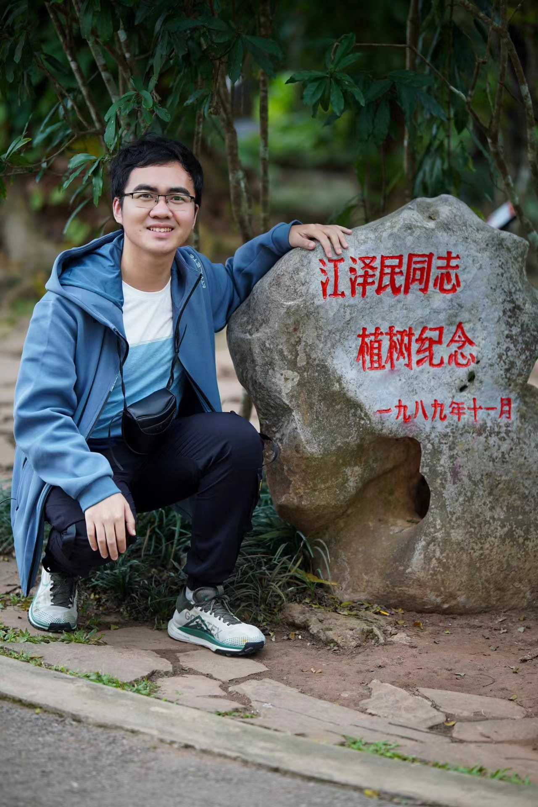

Hao Yu
|  | 余 浩 |
{kind=link}
About Me
Education
2019.9 - 2025.3, Ph.D. degree in LAMDA Group, School of Artificial Intelligence, Nanjing University (NJU), advised by Prof. Jianxin Wu.
2015.9 - 2019.6, B.Sc. degree in School of the Gifted Young (SGY), University of Science and Technology of China (USTC).
Career
2025.3 – present, Algorithm Researcher & Engineer at Qwen Team, Alibaba.
2023.5 - 2024.11, Research Intern at PAI, Alibaba Cloud.
Research Interests
Currently, I'm focused on:
Model Compression/Acceleration: Quantization, pruning, low-rank approximation, knowledge distillation of vision, language and recommendation models.
Image Related Tasks: Data Augmentation, Classification, Detection, Long-tail Learning.
Publications
Preprint
Hao Yu, Zelan Yang, Shen Li, Yong Li, Jianxin Wu. Effectively Compress KV Heads for LLM. In arXiv:2406.07056, 2024. [arXiv]
Conference Articles
Minghao Fu, Hao Yu, Jie Shao, Junjie Zhou, Ke Zhu, Jianxin Wu. Quantization without Tears. In the IEEE/CVF Conference on Computer Vision and Pattern Recognition, (CVPR2025). Nashville, TN, Jun. 2025. pp. XX-XX. [paper]
Hao Yu, Yang Zhou, Bohua Chen, Zelan Yang, Shen Li, Yong Li, Jianxin Wu. Treasures in Discarded Weights for LLM Quantization. In Proceedings of the 39th AAAI Conference on Artificial Intelligence (AAAI2025). Philadelphia PA, USA, Feb.-Mar. 2025. pp. 22218-22226. [paper]
Hao Yu, Minghao Fu, Jiandong Ding, Yusheng Zhou, Jianxin Wu. Unified Low-rank Compression Framework for Click-through Rate Prediction. In Proceedings of the 30th ACM SIGKDD Conference on Knowledge Discovery and Data Mining (KDD2024). Barcelona, Spain, Aug. 2024, pp. 6169-6180. [paper] [arXiv] [code]
Hao Yu, Jianxin Wu. Compressing Transformers: Features Are Low-Rank, but Weights Are Not! In Proceedings of the 37th AAAI Conference on Artificial Intelligence (AAAI2023). Washington DC, USA, Feb. 2023, pp. 11007-11015. [paper]
Yun-Hao Cao, Hao Yu, Jianxin Wu. Training Vision Transformers with Only 2040 Images. In Proceedings of the 17th European Conference on Computer Vision (ECCV2022). Tel Aviv, Israel, Oct. 2022, LNCS vol. 13685, pp. 220-237. [paper] [arXiv] [code]
Hao Yu, Huanyu Wang, Jianxin Wu. Mixup without Hesitation. In Proceedings of the 11th International Conference on Image and Graphics (ICIG 2021). Haikou, China, November 2021, pp. LNCS 12889, pp. 143-154. [paper] [arXiv] [code]
Journal Articles
Hao Yu*, Yingxiao Du*, Jianxin Wu. Reviving Undersampling for Long-Tailed Learning. In Pattern Recognition, Vol. 161, Article 111324, 2025. [paper] [arXiv] [code]
Hao Yu, Jianxin Wu. A Unified Pruning Framework for Vision Transformers. In SCIENCE CHINA Information Sciences (SCIS), 66(7), Article 179101, 2023. [paper] [appendix] [arXiv] [code]
Services
Conference Reviewers
AAAI2025, ICLR2025, NeurIPS2024, CVPR2024, WWW2023, NeurIPS2023, AAAI2023, CVPR2022, ECCV2022, PAKDD2022, ECML2021, AAAI2021, IJCAI2021, ICPR2020.
Journal Reviewers
IEEE Transactions on Pattern Analysis and Machine Intelligence (TPAMI).
Knowledge and Information Systems (KIS).
Teaching Assistant
Pattern Recognition, Spring, 2021
Data Mining for Complex Data Objects, Autumn, 2020
Contests & Awards
Huawei Spark Award. 2022
Excellent Graduate Cadre of Nanjing University. 2021
Excellent Youth League Member of Nanjing University. 2021
Honorable mention in the competition of 2020 DIGIX Global AI Challenge. [slides][code]
Xu Xin International Student Exchange Scholarship. 2019
Talent Program in Computer Science and Technology of USTC. 2016,2017